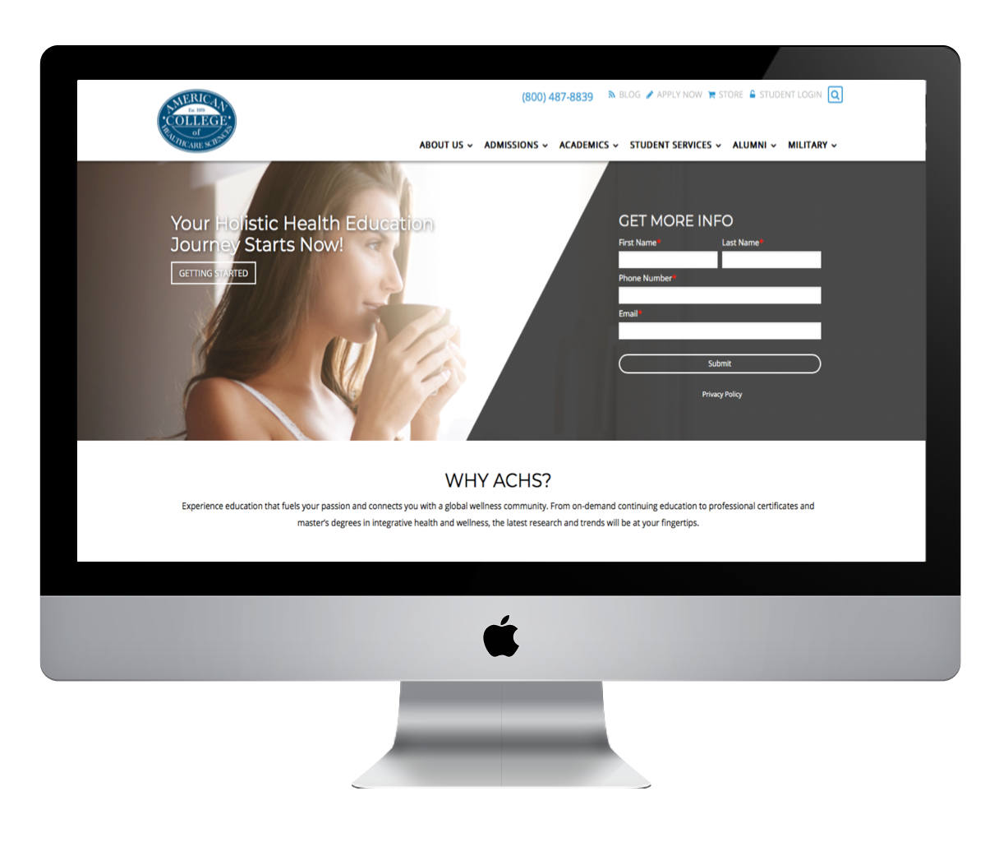

Developer: Jason Diersman
Role: Design
The Problem
The American College of Health Sciences was in need for a design and UX refresh.
The Solution
We built ACHS a new website using Drupal 8 combined with Hubspot. I was responsible for organizing the site for stronger call to actions and developing funnels for each marketing demographic. I reduced their menu items from a mega menu( plus 20) to under 7 for each link. Creating a clean and simple navigation for current and future students.